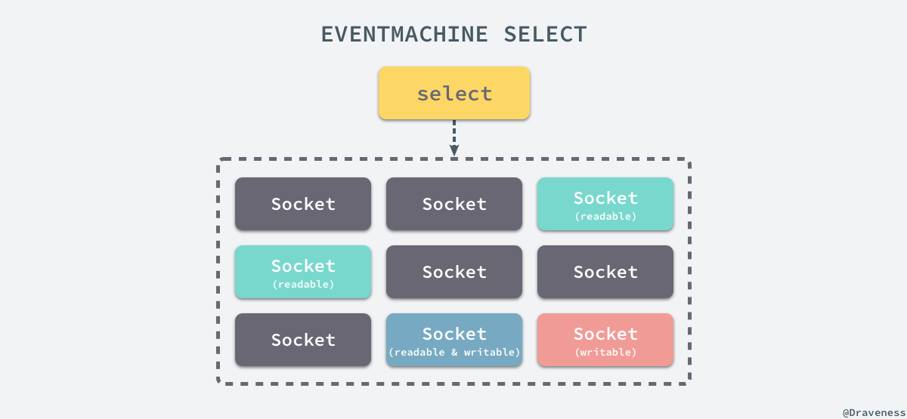
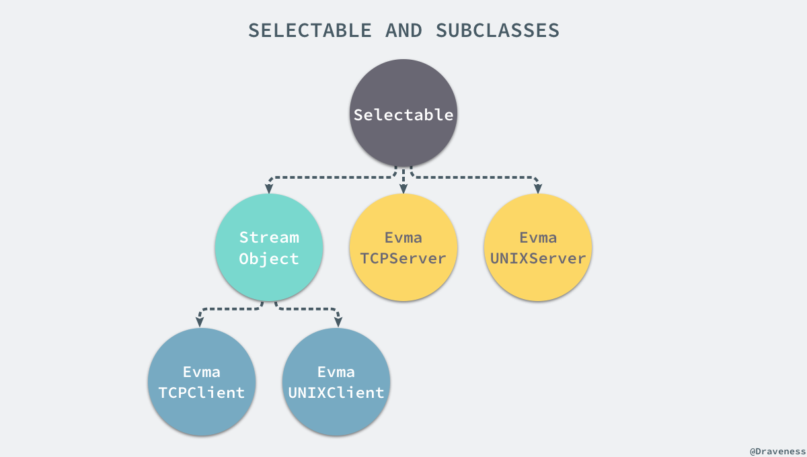
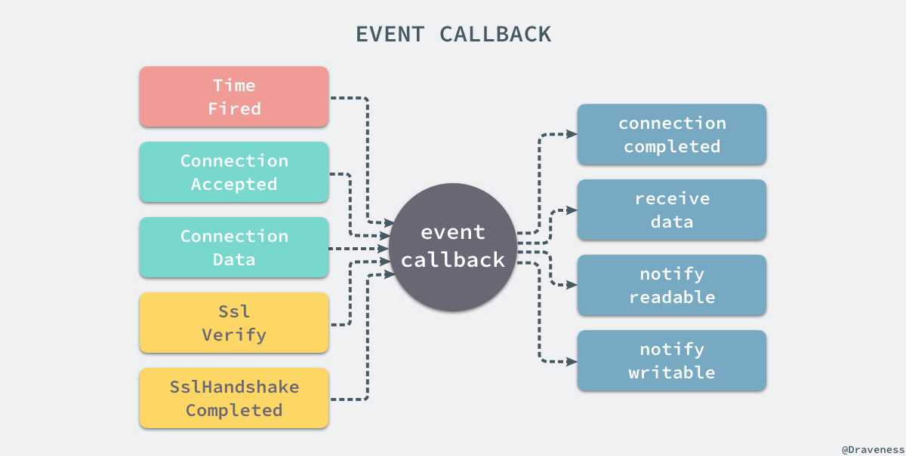
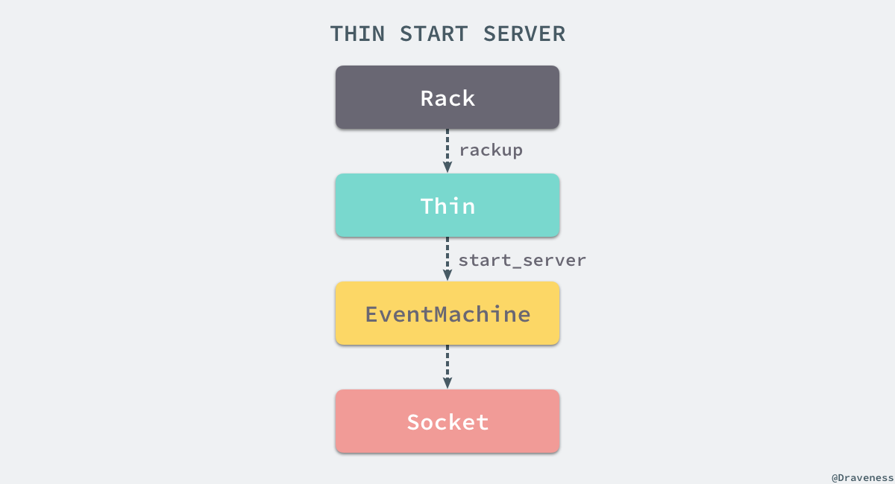
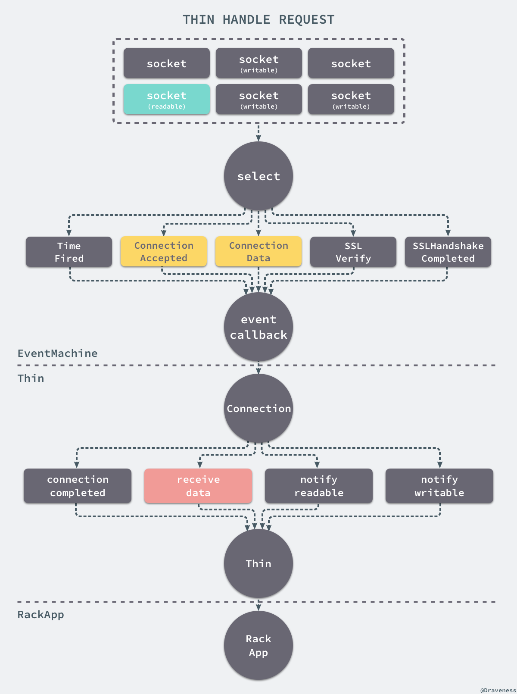
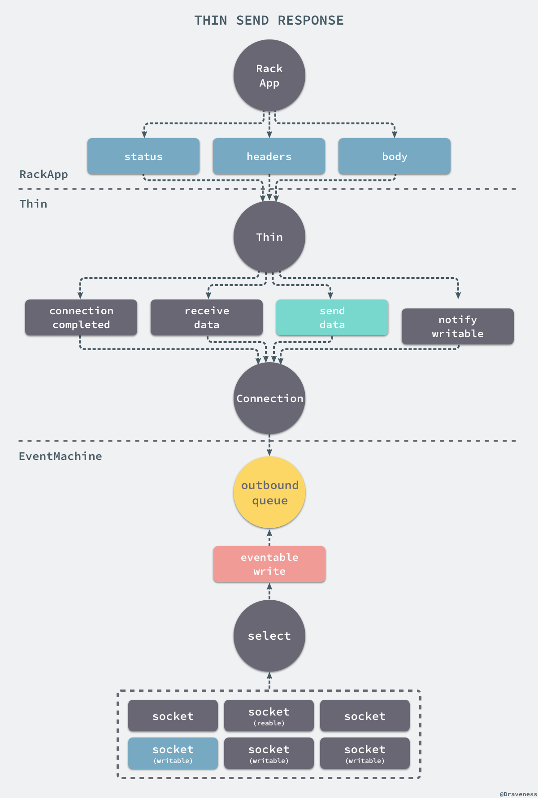
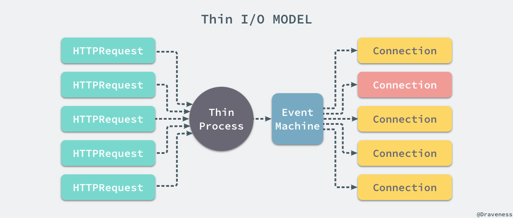

浅谈 Thin 的事件驱动模型
在上一篇文章中我们已经介绍了 WEBrick 的实现，它的 handler 是写在 Rack 工程中的，而在这篇文章介绍的 webserver thin 的 Rack 处理器也是写在 Rack 中的；与 WEBrick 相同，Thin 的实现也非常简单，官方对它的介绍是：
A very fast & simple Ruby web server.
它将 Mongrel、Event Machine 和 Rack 三者进行组合，在其中起到胶水的作用，所以在理解 Thin 的实现的过程中我们也需要分析 EventMachine 到底是如何工作的。
Thin 的实现
在这一节中我们将从源代码来分析介绍 Thin 的实现原理，因为部分代码仍然是在 Rack 工程中实现的，所以我们要从 Rack 工程的代码开始理解 Thin 的实现。
从 Rack 开始
Thin 的处理器 Rack::Handler::Thin 与其他遵循 Rack 协议的 webserver 一样都实现了 .run 方法，接受 Rack 应用和 options 作为输入：
module Rack
module Handler
class Thin
def self.run(app, options={})
environment = ENV['RACK_ENV'] || 'development'
default_host = environment == 'development' ? 'localhost' : '0.0.0.0'
host = options.delete(:Host) || default_host
port = options.delete(:Port) || 8080
args = [host, port, app, options]
args.pop if ::Thin::VERSION::MAJOR < 1 && ::Thin::VERSION::MINOR < 8
server = ::Thin::Server.new(*args)
yield server if block_given?
server.start
end
end
end
end
上述方法仍然会从 options 中取出 ip 地址和端口号，然后初始化一个 Thin::Server 的实例后，执行 #start 方法在 8080 端口上监听来自用户的请求。
初始化服务
Thin 服务的初始化由以下的代码来处理，首先会处理在 Rack::Handler::Thin.run 中传入的几个参数 host、port、app 和 options，将 Rack 应用存储在临时变量中：
From: lib/thin/server.rb @ line 100:
Owner: Thin::Server
def initialize(*args, &block)
host, port, options = DEFAULT_HOST, DEFAULT_PORT, {}
args.each do |arg|
case arg
when 0.class, /^\d+$/ then port = arg.to_i
when String then host = arg
when Hash then options = arg
else
@app = arg if arg.respond_to?(:call)
end
end
@backend = select_backend(host, port, options)
@backend.server = self
@backend.maximum_connections = DEFAULT_MAXIMUM_CONNECTIONS
@backend.maximum_persistent_connections = DEFAULT_MAXIMUM_PERSISTENT_CONNECTIONS
@backend.timeout = options[:timeout] || DEFAULT_TIMEOUT
@app = Rack::Builder.new(&block).to_app if block
end
在初始化服务的过程中，总共只做了三件事情，处理参数、选择并配置 backend，创建新的应用：
处理参数的过程自然不用多说，只是这里判断的方式并不是按照顺序处理的，而是按照参数的类型；在初始化器的最后，如果向初始化器传入了 block，那么就会使用 Rack::Builder 和 block 中的代码初始化一个新的 Rack 应用。
选择后端
在选择后端时 Thin 使用了 #select_backend 方法，这里使用 case 语句替代多个 if、else，也是一个我们可以使用的小技巧：
From: lib/thin/server.rb @ line 261:
Owner: Thin::Server
def select_backend(host, port, options)
case
when options.has_key?(:backend)
raise ArgumentError, ":backend must be a class" unless options[:backend].is_a?(Class)
options[:backend].new(host, port, options)
when options.has_key?(:swiftiply)
Backends::SwiftiplyClient.new(host, port, options)
when host.include?('/')
Backends::UnixServer.new(host)
else
Backends::TcpServer.new(host, port)
end
end
在大多数时候，我们只会选择 UnixServer 和 TcpServer 两种后端中的一个，而后者又是两者中使用更为频繁的后端：
From: lib/thin/backends/tcp_server.rb @ line 8:
Owner: Thin::Backends::TcpServer
def initialize(host, port)
@host = host
@port = port
super()
end
From: lib/thin/backends/base.rb @ line 47:
Owner: Thin::Backends::Base
def initialize
@connections = {}
@timeout = Server::DEFAULT_TIMEOUT
@persistent_connection_count = 0
@maximum_connections = Server::DEFAULT_MAXIMUM_CONNECTIONS
@maximum_persistent_connections = Server::DEFAULT_MAXIMUM_PERSISTENT_CONNECTIONS
@no_epoll = false
@ssl = nil
@threaded = nil
@started_reactor = false
end
初始化的过程中只是对属性设置默认值，比如 host、port 以及超时时间等等，并没有太多值得注意的代码。
启动服务
在启动服务时会直接调用 TcpServer#start 方法并在其中传入一个用于处理信号的 block：
From: lib/thin/server.rb @ line 152:
Owner: Thin::Server
def start
raise ArgumentError, 'app required' unless @app
log_info "Thin web server (v#{VERSION::STRING} codename #{VERSION::CODENAME})"
log_debug "Debugging ON"
trace "Tracing ON"
log_info "Maximum connections set to #{@backend.maximum_connections}"
log_info "Listening on #{@backend}, CTRL+C to stop"
@backend.start { setup_signals if @setup_signals }
end
虽然这里的 backend 其实已经被选择成了 TcpServer，但是该子类并没有覆写 #start 方法，这里执行的方法其实是从父类继承的：
From: lib/thin/backends/base.rb @ line 60:
Owner: Thin::Backends::Base
def start
@stopping = false
starter = proc do
connect
yield if block_given?
@running = true
end
# Allow for early run up of eventmachine.
if EventMachine.reactor_running?
starter.call
else
@started_reactor = true
EventMachine.run(&starter)
end
end
上述方法在构建一个 starter block 之后，将该 block 传入 EventMachine.run 方法，随后执行的 #connect 会启动一个 EventMachine 的服务器用于处理用户的网络请求：
From: lib/thin/backends/tcp_server.rb @ line 15:
Owner: Thin::Backends::TcpServer
def connect
@signature = EventMachine.start_server(@host, @port, Connection, &method(:initialize_connection))
binary_name = EventMachine.get_sockname( @signature )
port_name = Socket.unpack_sockaddr_in( binary_name )
@port = port_name[0]
@host = port_name[1]
@signature
end
在 EventMachine 的文档中，.start_server 方法被描述成一个在指定的地址和端口上初始化 TCP 服务的方法，正如这里所展示的，它经常在 .run 方法的 block 中执行；该方法的参数 Connection 作为处理 TCP 请求的类，会实现不同的方法接受各种各样的回调，传入的 initialize_connection block 会在有请求需要处理时对 Connection 对象进行初始化：
Connection对象继承自EventMachine::Connection，是 EventMachine 与外界的接口，在 EventMachine 中的大部分事件都会调用Connection的一个实例方法来传递数据和参数。
From: lib/thin/backends/base.rb @ line 145:
Owner: Thin::Backends::Base
def initialize_connection(connection)
connection.backend = self
connection.app = @server.app
connection.comm_inactivity_timeout = @timeout
connection.threaded = @threaded
connection.start_tls(@ssl_options) if @ssl
if @persistent_connection_count < @maximum_persistent_connections
connection.can_persist!
@persistent_connection_count += 1
end
@connections[connection.__id__] = connection
end
处理请求的连接
Connection 类中有很多的方法 #post_init、#receive_data 方法等等都是由 EventMachine 在接收到请求时调用的，当 Thin 的服务接收到来自客户端的数据时就会调用 #receive_data 方法：
From: lib/thin/connection.rb @ line 36:
Owner: Thin::Connection
def receive_data(data)
@idle = false
trace data
process if @request.parse(data)
rescue InvalidRequest => e
log_error("Invalid request", e)
post_process Response::BAD_REQUEST
end
在这里我们看到了与 WEBrick 在处理来自客户端的原始数据时使用的方法 #parse，它会解析客户端请求的原始数据并执行 #process 来处理 HTTP 请求：
From: lib/thin/connection.rb @ line 47:
Owner: Thin::Connection
def process
if threaded?
@request.threaded = true
EventMachine.defer { post_process(pre_process) }
else
@request.threaded = false
post_process(pre_process)
end
end
如果当前的连接允许并行处理多个用户的请求，那么就会在 EventMachine.defer 的 block 中执行两个方法 #pre_process 和 #post_process：
From: lib/thin/connection.rb @ line 63:
Owner: Thin::Connection
def pre_process
@request.remote_address = remote_address
@request.async_callback = method(:post_process)
response = AsyncResponse
catch(:async) do
response = @app.call(@request.env)
end
response
rescue Exception => e
unexpected_error(e)
can_persist? && @request.persistent? ? Response::PERSISTENT_ERROR : Response::ERROR
end
在 #pre_process 中没有做太多的事情，只是调用了 Rack 应用的 #call 方法，得到一个三元组 response，在这之后将这个数组传入 #post_process 方法：
From: lib/thin/connection.rb @ line 95:
Owner: Thin::Connection
def post_process(result)
return unless result
result = result.to_a
return if result.first == AsyncResponse.first
@response.status, @response.headers, @response.body = *result
@response.each do |chunk|
send_data chunk
end
rescue Exception => e
unexpected_error(e)
close_connection
ensure
if @response.body.respond_to?(:callback) && @response.body.respond_to?(:errback)
@response.body.callback { terminate_request }
@response.body.errback { terminate_request }
else
terminate_request unless result && result.first == AsyncResponse.first
end
end
#post_response 方法将传入的数组赋值给 response 的 status、headers 和 body 这三部分，在这之后通过 #send_data 方法将 HTTP 响应以块的形式写回 Socket；写回结束后可能会调用对应的 callback 并关闭持有的 request 和 response 两个实例变量。
上述方法中调用的
#send_data继承自EventMachine::Connection类。
小结
到此为止，我们对于 Thin 是如何处理来自用户的 HTTP 请求的就比较清楚了，我们可以看到 Thin 本身并没有做一些类似解析 HTTP 数据包以及发送数据的问题，它使用了来自 Rack 和 EventMachine 两个开源框架中很多已有的代码逻辑，确实只做了一些胶水的事情。
对于 Rack 是如何工作的我们在前面的文章 谈谈 Rack 协议与实现 中已经介绍过了；虽然我们看到了很多与 EventMachine 相关的代码，但是到这里我们仍然对 EventMachine 不是太了解。
EventMachine 和 Reactor 模式
为了更好地理解 Thin 的工作原理，在这里我们会介绍一个 EventMachine 和 Reactor 模式。
EventMachine 其实是一个使用 Ruby 实现的事件驱动的并行框架，它使用 Reactor 模式提供了事件驱动的 IO 模型，如果你对 Node.js 有所了解的话，那么你一定对事件驱动这个词并不陌生，EventMachine 的出现主要是为了解决两个核心问题：
- 为生产环境提供更高的可伸缩性、更好的性能和稳定性；
- 为上层提供了一些能够减少高性能的网络编程复杂性的 API；
其实 EventMachine 的主要作用就是将所有同步的 IO 都变成异步的，调度都通过事件来进行，这样用于监听用户请求的进程不会被其他代码阻塞，能够同时为更多的客户端提供服务；在这一节中，我们需要了解一下在 Thin 中使用的 EventMachine 中几个常用方法的实现。
启动事件循环
EventMachine 其实就是一个事件循环（Event Loop），当我们想使用 EventMachine 来处理某些任务时就一定需要调用 .run 方法启动这个事件循环来接受外界触发的各种事件：
From: lib/eventmachine.rb @ line 149:
Owner: #<Class:EventMachine>
def self.run blk=nil, tail=nil, &block
# ...
begin
@reactor_pid = Process.pid
@reactor_running = true
initialize_event_machine
(b = blk || block) and add_timer(0, b)
if @next_tick_queue && !@next_tick_queue.empty?
add_timer(0) { signal_loopbreak }
end
@reactor_thread = Thread.current
run_machine
ensure
until @tails.empty?
@tails.pop.call
end
release_machine
cleanup_machine
@reactor_running = false
@reactor_thread = nil
end
end
在这里我们会使用 .initialize_event_machine 初始化当前的事件循环，其实也就是一个全局的 Reactor 的单例，最终会执行 Reactor#initialize_for_run 方法：
From: lib/em/pure_ruby.rb @ line 522:
Owner: EventMachine::Reactor
def initialize_for_run
@running = false
@stop_scheduled = false
@selectables ||= {}; @selectables.clear
@timers = SortedSet.new # []
set_timer_quantum(0.1)
@current_loop_time = Time.now
@next_heartbeat = @current_loop_time + HeartbeatInterval
end
在启动事件循环的过程中，它还会将传入的 block 与一个 interval 为 0 的键组成键值对存到 @timers 字典中，所有加入的键值对都会在大约 interval 的时间过后执行一次 block。
随后执行的 #run_machine 在最后也会执行 Reactor 的 #run 方法，该方法中包含一个 loop 语句，也就是我们一直说的事件循环：
From: lib/em/pure_ruby.rb @ line 540:
Owner: EventMachine::Reactor
def run
raise Error.new( "already running" ) if @running
@running = true
begin
open_loopbreaker
loop {
@current_loop_time = Time.now
break if @stop_scheduled
run_timers
break if @stop_scheduled
crank_selectables
break if @stop_scheduled
run_heartbeats
}
ensure
close_loopbreaker
@selectables.each {|k, io| io.close}
@selectables.clear
@running = false
end
end
在启动事件循环之间会在 #open_loopbreaker 中创建一个 LoopbreakReader 的实例绑定在 127.0.0.1 和随机的端口号组成的地址上，然后开始运行事件循环。
在事件循环中，Reactor 总共需要执行三部分的任务，分别是执行定时器、处理 Socket 上的事件以及运行心跳方法。
无论是运行定时器还是执行心跳方法其实都非常简单，只要与当前时间进行比较，如果到了触发的时间就调用正确的方法或者回调，最后的 #crank_selectables 方法就是用于处理 Socket 上读写事件的方法了：
From: lib/em/pure_ruby.rb @ line 540:
Owner: EventMachine::Reactor
def crank_selectables
readers = @selectables.values.select { |io| io.select_for_reading? }
writers = @selectables.values.select { |io| io.select_for_writing? }
s = select(readers, writers, nil, @timer_quantum)
s and s[1] and s[1].each { |w| w.eventable_write }
s and s[0] and s[0].each { |r| r.eventable_read }
@selectables.delete_if {|k,io|
if io.close_scheduled?
io.close
begin
EventMachine::event_callback io.uuid, ConnectionUnbound, nil
rescue ConnectionNotBound; end
true
end
}
end
上述方法会在 Socket 变成可读或者可写时执行 #eventable_write 或 #eventable_read 执行事件的回调，我们暂时放下这两个方法，先来了解一下 EventMachine 是如何启动服务的。
启动服务
在启动服务的过程中，最重要的目的就是创建一个 Socket 并绑定在指定的 ip 和端口上，在实现这个目的的过程中，我们使用了以下的几个方法，首先是 EventMachine.start_server：
From: lib/eventmachine.rb @ line 516:
Owner: #<Class:EventMachine>
def self.start_server server, port=nil, handler=nil, *args, &block
port = Integer(port)
klass = klass_from_handler(Connection, handler, *args)
s = if port
start_tcp_server server, port
else
start_unix_server server
end
@acceptors[s] = [klass, args, block]
s
end
该方法其实使我们在使用 EventMachine 时常见的接口，只要我们想要启动一个新的 TCP 或者 UNIX 服务器，就可以上述方法，在这里会根据端口号是否存在，选择执行 .start_tcp_server 或者 .start_unix_server 创建一个新的 Socket 并存储在 @acceptors 中：
From: lib/em/pure_ruby.rb @ line 184:
Owner: #<Class:EventMachine>
def self.start_tcp_server host, port
(s = EvmaTCPServer.start_server host, port) or raise "no acceptor"
s.uuid
end
EventMachine.start_tcp_server 在这里也只做了个『转发』方法的作用的，直接调用 EvmaTCPServer.start_server 创建一个新的 Socket 对象并绑定到传入的 <host, port> 上：
From: lib/em/pure_ruby.rb @ line 1108:
Owner: #<Class:EventMachine::EvmaTCPServer>
def self.start_server host, port
sd = Socket.new( Socket::AF_LOCAL, Socket::SOCK_STREAM, 0 )
sd.setsockopt( Socket::SOL_SOCKET, Socket::SO_REUSEADDR, true )
sd.bind( Socket.pack_sockaddr_in( port, host ))
sd.listen( 50 ) # 5 is what you see in all the books. Ain't enough.
EvmaTCPServer.new sd
end
方法的最后会创建一个新的 EvmaTCPServer 实例的过程中，我们需要通过 #fcntl 将 Socket 变成非阻塞式的：
From: lib/em/pure_ruby.rb @ line 687:
Owner: EventMachine::Selectable
def initialize io
@io = io
@uuid = UuidGenerator.generate
@is_server = false
@last_activity = Reactor.instance.current_loop_time
m = @io.fcntl(Fcntl::F_GETFL, 0)
@io.fcntl(Fcntl::F_SETFL, Fcntl::O_NONBLOCK | m)
@close_scheduled = false
@close_requested = false
se = self; @io.instance_eval { @my_selectable = se }
Reactor.instance.add_selectable @io
end
不只是 EvmaTCPServer，所有的 Selectable 子类在初始化的最后都会将新的 Socket 以 uuid 为键存储到 Reactor 单例对象的 @selectables 字典中：
From: lib/em/pure_ruby.rb @ line 532:
Owner: EventMachine::Reactor
def add_selectable io
@selectables[io.uuid] = io
end
在整个事件循环的大循环中，这里存入的所有 Socket 都会被 #select 方法监听，在响应的事件发生时交给合适的回调处理，作者在 Redis 中的事件循环 一文中也介绍过非常相似的处理过程。

所有的 Socket 都会存储在一个 @selectables 的哈希中并由 #select 方法监听所有的读写事件，一旦相应的事件触发就会通过 eventable_read 或者 eventable_write 方法来响应该事件。
处理读写事件
所有的读写事件都是通过 Selectable 和它的子类来处理的，在 EventMachine 中，总共有以下的几种子类：

所有处理服务端读写事件的都是 Selectable 的子类，也就是 EvmaTCPServer 和 EvmaUNIXServer，而所有处理客户端读写事件的都是 StreamObject 的子类 EvmaTCPServer 和 EvmaUNIXClient。
当我们初始化的绑定在 <host, port> 上的 Socket 对象监听到了来自用户的 TCP 请求时，当前的 Socket 就会变得可读，事件循环中的 #select 方法就会调用 EvmaTCPClient#eventable_read 通知由一个请求需要处理：
From: lib/em/pure_ruby.rb @ line 1130:
Owner: EventMachine::EvmaTCPServer
def eventable_read
begin
10.times {
descriptor, peername = io.accept_nonblock
sd = EvmaTCPClient.new descriptor
sd.is_server = true
EventMachine::event_callback uuid, ConnectionAccepted, sd.uuid
}
rescue Errno::EWOULDBLOCK, Errno::EAGAIN
end
end
在这里会尝试多次 #accept_non_block 当前的 Socket 并会创建一个 TCP 的客户端对象 EvmaTCPClient，同时通过 .event_callback 方法发送 ConnectionAccepted 消息。
EventMachine::event_callback 就像是一个用于处理所有事件的中心方法，所有的回调都要通过这个中继器进行调度，在实现上就是一个庞大的 if、else 语句，里面处理了 EventMachine 中可能出现的 10 种状态和操作：

大多数事件在触发时，都会从 @conns 中取出相应的 Connection 对象，最后执行合适的方法来处理，而这里触发的 ConnectionAccepted 事件是通过以下的代码来处理的：
From: lib/eventmachine.rb @ line 1462:
Owner: #<Class:EventMachine>
def self.event_callback conn_binding, opcode, data
if opcode == # ...
# ...
elsif opcode == ConnectionAccepted
accep, args, blk = @acceptors[conn_binding]
raise NoHandlerForAcceptedConnection unless accep
c = accep.new data, *args
@conns[data] = c
blk and blk.call(c)
c
else
# ...
end
end
上述的 accep 变量就是我们在 Thin 调用 .start_server 时传入的 Connection 类，在这里我们初始化了一个新的实例，同时以 Socket 的 uuid 作为键存到 @conns 中。
在这之后 #select 方法就会监听更多 Socket 上的事件了，当这个 "accept" 后创建的 Socket 接收到数据时，就会触发下面的 #eventable_read 方法：
From: lib/em/pure_ruby.rb @ line 1130:
Owner: EventMachine::StreamObject
def eventable_read
@last_activity = Reactor.instance.current_loop_time
begin
if io.respond_to?(:read_nonblock)
10.times {
data = io.read_nonblock(4096)
EventMachine::event_callback uuid, ConnectionData, data
}
else
data = io.sysread(4096)
EventMachine::event_callback uuid, ConnectionData, data
end
rescue Errno::EAGAIN, Errno::EWOULDBLOCK, SSLConnectionWaitReadable
rescue Errno::ECONNRESET, Errno::ECONNREFUSED, EOFError, Errno::EPIPE, OpenSSL::SSL::SSLError
@close_scheduled = true
EventMachine::event_callback uuid, ConnectionUnbound, nil
end
end
方法会从 Socket 中读取数据并通过 .event_callback 发送 ConnectionData 事件：
From: lib/eventmachine.rb @ line 1462:
Owner: #<Class:EventMachine>
def self.event_callback conn_binding, opcode, data
if opcode == # ...
# ...
elsif opcode == ConnectionData
c = @conns[conn_binding] or raise ConnectionNotBound, "received data #{data} for unknown signature: #{conn_binding}"
c.receive_data data
else
# ...
end
end
从上述方法对 ConnectionData 事件的处理就可以看到通过传入 Socket 的 uuid 和数据，就可以找到上面初始化的 Connection 对象，#receive_data 方法就能够将数据传递到上层，让用户在自定义的 Connection 中实现自己的处理逻辑，这也就是 Thin 需要覆写 #receive_data 方法来接受数据的原因了。
当 Thin 以及 Rack 应用已经接收到了来自用户的请求、完成处理并返回之后经过一系列复杂的调用栈就会执行 Connection#send_data 方法：
From: lib/em/connection.rb @ line 324:
Owner: EventMachine::Connection
def send_data data
data = data.to_s
size = data.bytesize if data.respond_to?(:bytesize)
size ||= data.size
EventMachine::send_data @signature, data, size
end
From: lib/em/pure_ruby.rb @ line 172:
Owner: #<Class:EventMachine>
def self.send_data target, data, datalength
selectable = Reactor.instance.get_selectable( target ) or raise "unknown send_data target"
selectable.send_data data
end
From: lib/em/pure_ruby.rb @ line 851:
Owner: EventMachine::StreamObject
def send_data data
unless @close_scheduled or @close_requested or !data or data.length <= 0
@outbound_q << data.to_s
end
end
经过一系列同名方法的调用，在调用栈末尾的 StreamObject#send_data 中，将所有需要写入的数据全部加入 @outbound_q 中，这其实就是一个待写入数据的队列。
当 Socket 变得可写之后，就会由 #select 方法触发 #eventable_write 将 @outbound_q 队列中的数据通过 #write_nonblock 或者 syswrite 写入 Socket，也就是将请求返回给客户端。
From: lib/em/pure_ruby.rb @ line 823:
Owner: EventMachine::StreamObject
def eventable_write
@last_activity = Reactor.instance.current_loop_time
while data = @outbound_q.shift do
begin
data = data.to_s
w = if io.respond_to?(:write_nonblock)
io.write_nonblock data
else
io.syswrite data
end
if w < data.length
@outbound_q.unshift data[w..-1]
break
end
rescue Errno::EAGAIN, SSLConnectionWaitReadable, SSLConnectionWaitWritable
@outbound_q.unshift data
break
rescue EOFError, Errno::ECONNRESET, Errno::ECONNREFUSED, Errno::EPIPE, OpenSSL::SSL::SSLError
@close_scheduled = true
@outbound_q.clear
end
end
end
关闭 Socket
当数据写入时发生了 EOFError 或者其他错误时就会将 close_scheduled 标记为 true，在随后的事件循环中会关闭 Socket 并发送 ConnectionUnbound 事件：
From: lib/em/pure_ruby.rb @ line 540:
Owner: EventMachine::Reactor
def crank_selectables
# ...
@selectables.delete_if {|k,io|
if io.close_scheduled?
io.close
begin
EventMachine::event_callback io.uuid, ConnectionUnbound, nil
rescue ConnectionNotBound; end
true
end
}
end
.event_callback 在处理 ConnectionUnbound 事件时会在 @conns 中将结束的 Connection 剔除：
def self.event_callback conn_binding, opcode, data
if opcode == ConnectionUnbound
if c = @conns.delete( conn_binding )
c.unbind
io = c.instance_variable_get(:@io)
begin
io.close
rescue Errno::EBADF, IOError
end
elsif c = @acceptors.delete( conn_binding )
else
raise ConnectionNotBound, "received ConnectionUnbound for an unknown signature: #{conn_binding}"
end
elsif opcode = 1
#...
end
end
在这之后会调用 Connection 的 #unbind 方法，再次执行 #close 确保 Socket 连接已经断掉了。
小结
EventMachine 在处理用户的请求时，会通过一个事件循环和一个中心化的事件处理中心 .event_callback 来响应所有的事件，你可以看到在使用 EventMachine 时所有的响应都是异步的，尤其是对 Socket 的读写，所有外部的输入在 EventMachine 看来都是一个事件，它们会被 EventMachine 选择合适的处理器进行转发。
I/O 模型
Thin 本身其实没有实现任何的 I/O 模型，它通过对 EventMachine 进行封装，使用了其事件驱动的特点，为上层提供了处理并发 I/O 的 Reactor 模型，在不同的阶段有着不同的工作流程，在启动 Thin 的服务时，Thin 会直接通过 .start_server 创建一个 Socket 监听一个 <host, port> 组成的元组：

当服务启动之后，就可以接受来自客户端的 HTTP 请求了，处理 HTTP 请求总共需要三个模块的合作，分别是 EventMachine、Thin 以及 Rack 应用：

在上图中省略了 Rack 的处理部分，不过对于其他部分的展示还是比较详细的，EventMachine 负责对 TCP Socket 进行监听，在发生事件时通过 .event_callback 进行处理，将消息转发给位于 Thin 中的 Connection，该类以及模块负责处理 HTTP 协议相关的内容，将整个请求包装成一个 env 对象，调用 #call 方法。
在这时就开始了返回响应的逻辑了，#call 方法会返回一个三元组，经过 Thin 中的 #send_data 最终将数据写入 outbound_q 队列中等待处理：

EventMachine 会通过一个事件循环，使用 #select 监听当前 Socket 的可读写状态，并在合适的时候触发 #eventable_write 从 outbound_q 队列中读取数据写入 Socket，在写入结束后 Socket 就会被关闭，整个请求的响应也就结束了。

Thin 使用了 EventMachine 作为底层处理 TCP 协议的框架，提供了事件驱动的 I/O 模型，也就是我们理解的 Reactor 模型，对于每一个 HTTP 请求都会创建一个对应的 Connection 对象，所有的事件都由 EventMachine 来派发，最大程度做到了 I/O 的读写都是异步的，不会阻塞当前的线程，这也是 Thin 以及 Node.js 能够并发处理大量请求的原因。
总结
Thin 作为一个 Ruby 社区中简单的 webserver，其实本身没有做太多的事情，只是使用了 EventMachine 提供的事件驱动的 I/O 模型，为上层提供了更加易用的 API，相比于其他同步处理请求的 webserver，Reactor 模式的优点就是 Thin 的优点，主程序只负责监听事件和分发事件，一旦涉及到 I/O 的工作都尽量使用回调的方式处理，当回调完成后再发送通知，这种方式能够减少进程的等待时间，时刻都在处理用户的请求和事件。